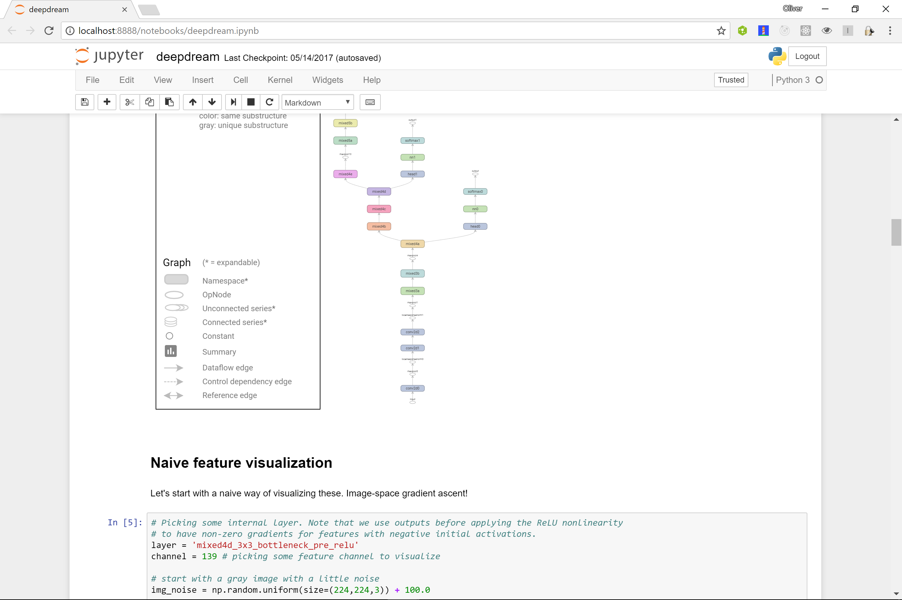
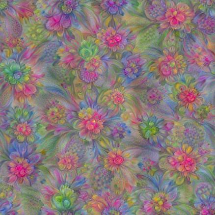

Deep Dream
Looking under the covers of Convolutional Neural Networks
Oliver Zeigermann / @DJCordhose
The Inception Model
Consists of many convolutional layers, each having a hundred or more feature channels
Trained on the ImageNet dataset to classify images

Deep Dream Notebook

- git clone git@github.com:tensorflow/tensorflow.git
- cd tensorflow/tensorflow/examples/tutorials/deepdream
- jupyter notebook
Lets you take a look inside
- you choose a layer, e.g. mixed4d_3x3_bottleneck_pre_relu
- you pick a feature channel, e.g. 139
- deep dream generates an image
- by maximizing overall activation
- uses gradient ascent
Gives you an impression what each channel "sees"
Early layers show patterns with low abstraction
mixed3b_1x1_pre_relu, 101
Deeper Layers show more abstraction
mixed4d_3x3_bottleneck_pre_relu, 139
Deep Dream can also Dream / Hallucinate

By "over-interpreting" a specific channel on a random image
More Details and Examples
https://research.googleblog.com/2015/06/inceptionism-going-deeper-into-neural.htmlOther techniques
- Visualize Activations (which parts of an image triggered which feature channel)
- Visualizing Heatmaps for class Activation (which part of the image triggered the activation)
Visualize Activations

Deep Learning with Python, François Chollet, Manning
Heatmaps for class Activation

Deep Learning with Python, François Chollet, Manning